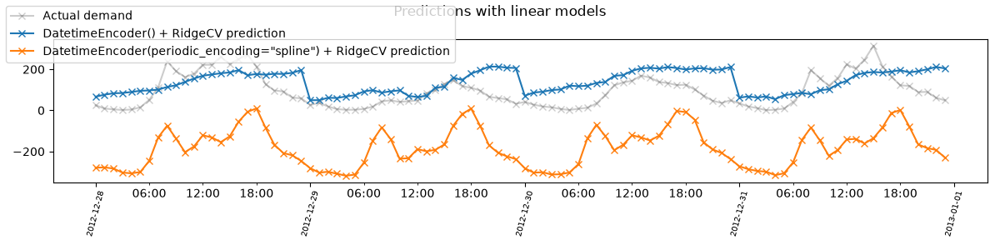
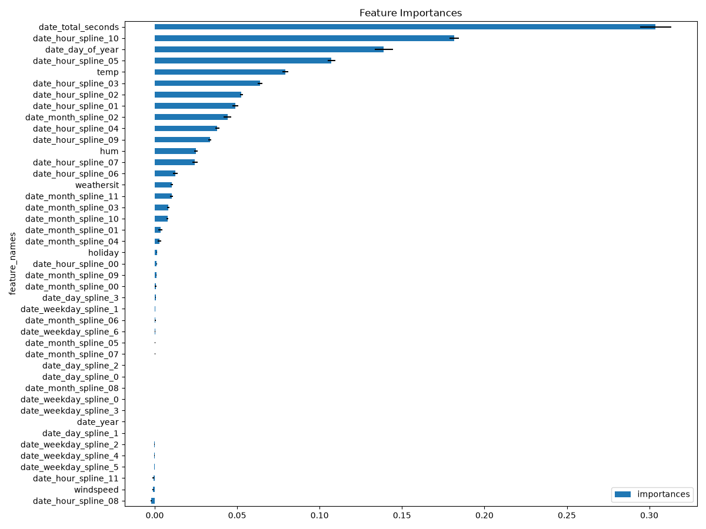

Note
Go to the end to download the full example code or to run this example in your browser via JupyterLite or Binder.
Handling datetime features with the DatetimeEncoder#
In this example, we illustrate how to better integrate datetime features
in machine learning models with the DatetimeEncoder.
This encoder breaks down passed datetime features into relevant numerical features, such as the month, the day of the week, the hour of the day, etc.
It is used by default in the TableVectorizer.
A problem with relevant datetime features#
We will use a dataset of bike sharing demand in 2011 and 2012. In this setting, we want to predict the number of bike rentals, based on the date, time and weather conditions.
| date | holiday | temp | hum | windspeed | weathersit | |
|---|---|---|---|---|---|---|
| 0 | 2011-01-01 00:00:00 | 0 | 0.240 | 0.810 | 0.00 | 1 |
| 1 | 2011-01-01 01:00:00 | 0 | 0.220 | 0.800 | 0.00 | 1 |
| 2 | 2011-01-01 02:00:00 | 0 | 0.220 | 0.800 | 0.00 | 1 |
| 3 | 2011-01-01 03:00:00 | 0 | 0.240 | 0.750 | 0.00 | 1 |
| 4 | 2011-01-01 04:00:00 | 0 | 0.240 | 0.750 | 0.00 | 1 |
| 17,374 | 2012-12-31 19:00:00 | 0 | 0.260 | 0.600 | 0.164 | 2 |
| 17,375 | 2012-12-31 20:00:00 | 0 | 0.260 | 0.600 | 0.164 | 2 |
| 17,376 | 2012-12-31 21:00:00 | 0 | 0.260 | 0.600 | 0.164 | 1 |
| 17,377 | 2012-12-31 22:00:00 | 0 | 0.260 | 0.560 | 0.134 | 1 |
| 17,378 | 2012-12-31 23:00:00 | 0 | 0.260 | 0.650 | 0.134 | 1 |
date
StringDtype- Null values
- 0 (0.0%)
- Unique values
-
17,379 (100.0%)
This column has a high cardinality (> 40).
Most frequent values
holiday
Int64DType- Null values
- 0 (0.0%)
- Unique values
- 2 (< 0.1%)
- Mean ± Std
- 0.0288 ± 0.167
- Median ± IQR
- 0 ± 0
- Min | Max
- 0 | 1
temp
Float64DType- Null values
- 0 (0.0%)
- Unique values
-
50 (0.3%)
This column has a high cardinality (> 40).
- Mean ± Std
- 0.497 ± 0.193
- Median ± IQR
- 0.500 ± 0.320
- Min | Max
- 0.0200 | 1.00
hum
Float64DType- Null values
- 0 (0.0%)
- Unique values
-
89 (0.5%)
This column has a high cardinality (> 40).
- Mean ± Std
- 0.627 ± 0.193
- Median ± IQR
- 0.630 ± 0.300
- Min | Max
- 0.00 | 1.00
windspeed
Float64DType- Null values
- 0 (0.0%)
- Unique values
- 30 (0.2%)
- Mean ± Std
- 0.190 ± 0.122
- Median ± IQR
- 0.194 ± 0.149
- Min | Max
- 0.00 | 0.851
weathersit
Int64DType- Null values
- 0 (0.0%)
- Unique values
- 4 (< 0.1%)
- Mean ± Std
- 1.43 ± 0.639
- Median ± IQR
- 1 ± 1
- Min | Max
- 1 | 4
No columns match the selected filter: . You can change the column filter in the dropdown menu above.
| Column | Column name | dtype | Is sorted | Null values | Unique values | Mean | Std | Min | Median | Max |
|---|---|---|---|---|---|---|---|---|---|---|
| 0 | date | StringDtype | True | 0 (0.0%) | 17379 (100.0%) | |||||
| 1 | holiday | Int64DType | False | 0 (0.0%) | 2 (< 0.1%) | 0.0288 | 0.167 | 0 | 0 | 1 |
| 2 | temp | Float64DType | False | 0 (0.0%) | 50 (0.3%) | 0.497 | 0.193 | 0.0200 | 0.500 | 1.00 |
| 3 | hum | Float64DType | False | 0 (0.0%) | 89 (0.5%) | 0.627 | 0.193 | 0.00 | 0.630 | 1.00 |
| 4 | windspeed | Float64DType | False | 0 (0.0%) | 30 (0.2%) | 0.190 | 0.122 | 0.00 | 0.194 | 0.851 |
| 5 | weathersit | Int64DType | False | 0 (0.0%) | 4 (< 0.1%) | 1.43 | 0.639 | 1 | 1 | 4 |
No columns match the selected filter: . You can change the column filter in the dropdown menu above.
date
StringDtype- Null values
- 0 (0.0%)
- Unique values
-
17,379 (100.0%)
This column has a high cardinality (> 40).
Most frequent values
holiday
Int64DType- Null values
- 0 (0.0%)
- Unique values
- 2 (< 0.1%)
- Mean ± Std
- 0.0288 ± 0.167
- Median ± IQR
- 0 ± 0
- Min | Max
- 0 | 1
temp
Float64DType- Null values
- 0 (0.0%)
- Unique values
-
50 (0.3%)
This column has a high cardinality (> 40).
- Mean ± Std
- 0.497 ± 0.193
- Median ± IQR
- 0.500 ± 0.320
- Min | Max
- 0.0200 | 1.00
hum
Float64DType- Null values
- 0 (0.0%)
- Unique values
-
89 (0.5%)
This column has a high cardinality (> 40).
- Mean ± Std
- 0.627 ± 0.193
- Median ± IQR
- 0.630 ± 0.300
- Min | Max
- 0.00 | 1.00
windspeed
Float64DType- Null values
- 0 (0.0%)
- Unique values
- 30 (0.2%)
- Mean ± Std
- 0.190 ± 0.122
- Median ± IQR
- 0.194 ± 0.149
- Min | Max
- 0.00 | 0.851
weathersit
Int64DType- Null values
- 0 (0.0%)
- Unique values
- 4 (< 0.1%)
- Mean ± Std
- 1.43 ± 0.639
- Median ± IQR
- 1 ± 1
- Min | Max
- 1 | 4
No columns match the selected filter: . You can change the column filter in the dropdown menu above.
| Column 1 | Column 2 | Cramér's V | Pearson's Correlation |
|---|---|---|---|
| hum | weathersit | 0.359 | 0.429 |
| temp | hum | 0.159 | -0.0560 |
| temp | weathersit | 0.131 | -0.0940 |
| hum | windspeed | 0.130 | -0.298 |
| windspeed | weathersit | 0.0823 | 0.00445 |
| holiday | temp | 0.0756 | -0.0214 |
| temp | windspeed | 0.0697 | -0.0405 |
| date | temp | 0.0566 | |
| date | windspeed | 0.0558 | |
| holiday | hum | 0.0497 | -0.0208 |
| date | weathersit | 0.0472 | |
| holiday | windspeed | 0.0466 | 0.0228 |
| date | hum | 0.0417 | |
| holiday | weathersit | 0.0174 | -0.00696 |
| date | holiday | 0.00948 |
Please enable javascript
The skrub table reports need javascript to display correctly. If you are displaying a report in a Jupyter notebook and you see this message, you may need to re-execute the cell or to trust the notebook (button on the top right or "File > Trust notebook").
0 16
1 40
2 32
3 13
4 1
...
17374 119
17375 89
17376 90
17377 61
17378 49
Name: cnt, Length: 17379, dtype: int64
We convert the dataframe’s "date" column using ToDatetime.
from skrub import ToDatetime
date = ToDatetime().fit_transform(X["date"])
print("original dtype:", X["date"].dtypes, "\n\nconverted dtype:", date.dtypes)
original dtype: str
converted dtype: datetime64[us]
Encoding the features#
We now encode this column with a DatetimeEncoder.
During the instantiation of the DatetimeEncoder, we specify that we want
don’t want to extract features with a resolution finer than hours. This is
because we don’t want to extract minutes, seconds and lower units, as they
are unimportant here.
from skrub import DatetimeEncoder
# DatetimeEncoder has "hour" as default resolution
date_enc = DatetimeEncoder().fit_transform(date)
print(date, "\n\nHas been encoded as:\n\n", date_enc)
0 2011-01-01 00:00:00
1 2011-01-01 01:00:00
2 2011-01-01 02:00:00
3 2011-01-01 03:00:00
4 2011-01-01 04:00:00
...
17374 2012-12-31 19:00:00
17375 2012-12-31 20:00:00
17376 2012-12-31 21:00:00
17377 2012-12-31 22:00:00
17378 2012-12-31 23:00:00
Name: date, Length: 17379, dtype: datetime64[us]
Has been encoded as:
date_year date_month date_day date_hour date_total_seconds
0 2011.0 1.0 1.0 0.0 1.293840e+09
1 2011.0 1.0 1.0 1.0 1.293844e+09
2 2011.0 1.0 1.0 2.0 1.293847e+09
3 2011.0 1.0 1.0 3.0 1.293851e+09
4 2011.0 1.0 1.0 4.0 1.293854e+09
... ... ... ... ... ...
17374 2012.0 12.0 31.0 19.0 1.356980e+09
17375 2012.0 12.0 31.0 20.0 1.356984e+09
17376 2012.0 12.0 31.0 21.0 1.356988e+09
17377 2012.0 12.0 31.0 22.0 1.356991e+09
17378 2012.0 12.0 31.0 23.0 1.356995e+09
[17379 rows x 5 columns]
We see that the encoder is working as expected: the column has been replaced by features extracting the month, day, hour, day of the week and total seconds since Epoch information.
One-liner with the TableVectorizer#
As mentioned earlier, the TableVectorizer makes use of the
DatetimeEncoder by default. Note that X["date"] is still
a string, but will be automatically transformed into a datetime in the
TableVectorizer.
from skrub import TableVectorizer
table_vec = TableVectorizer().fit(X)
pprint(table_vec.get_feature_names_out())
array(['date_year', 'date_month', 'date_day', 'date_hour',
'date_total_seconds', 'holiday', 'temp', 'hum', 'windspeed',
'weathersit'], dtype='<U18')
If we want to customize the DatetimeEncoder inside the TableVectorizer,
we can replace its default parameter with a new, custom instance.
Here, for example, we want it to extract the day of the week:
# use the ``datetime`` argument to use a custom DatetimeEncoder in the TableVectorizer
table_vec_weekday = TableVectorizer(datetime=DatetimeEncoder(add_weekday=True)).fit(X)
pprint(table_vec_weekday.get_feature_names_out())
array(['date_year', 'date_month', 'date_day', 'date_hour',
'date_total_seconds', 'date_weekday', 'holiday', 'temp', 'hum',
'windspeed', 'weathersit'], dtype='<U18')
Inspecting the TableVectorizer further, we can check that the
DatetimeEncoder is used on the correct column(s).
{'date': DatetimeEncoder(add_weekday=True),
'holiday': PassThrough(),
'hum': PassThrough(),
'temp': PassThrough(),
'weathersit': PassThrough(),
'windspeed': PassThrough()}
Feature engineering for linear models#
The DatetimeEncoder can generate additional periodic features. These are
particularly useful for linear models. This is controlled by the
periodic encoding parameter which can be either circular or spline,
for trigonometric functions or B-Splines respectively. In this example, we use
spline.
We can also add the day in the year with the parameter add_day_of_year.
table_vec_periodic = TableVectorizer(
datetime=DatetimeEncoder(
add_weekday=True, periodic_encoding="spline", add_day_of_year=True
)
).fit(X)
Prediction with datetime features#
For prediction tasks, we recommend using the TableVectorizer inside a
pipeline, combined with a model that can use the features extracted by the
DatetimeEncoder.
Here we’ll use a RidgeCV model as our learner. We also fill null values with
SimpleImputer and then rescale numeric features with StandardScaler.
To test the effect of different datetime encodings on the linear model, we train
three separate pipelines.
from sklearn.impute import SimpleImputer
from sklearn.linear_model import RidgeCV
from sklearn.pipeline import make_pipeline
from sklearn.preprocessing import StandardScaler
# Base pipeline with default DatetimeEncoder parameters
pipeline = make_pipeline(table_vec, StandardScaler(), SimpleImputer(), RidgeCV())
# Datetime encoder with weekday feature
pipeline_weekday = make_pipeline(
table_vec_weekday, StandardScaler(), SimpleImputer(), RidgeCV()
)
# Datetime encoder with periodic features
pipeline_periodic = make_pipeline(
table_vec_periodic, StandardScaler(), SimpleImputer(), RidgeCV()
)
Evaluating the model#
When using date and time features, we often care about predicting the future. In this case, we have to be careful when evaluating our model, because the standard settings of the cross-validation do not respect time ordering.
Instead, we can use the TimeSeriesSplit,
which ensures that the test set is always in the future.
from sklearn.model_selection import TimeSeriesSplit, cross_val_score
score_base = cross_val_score(
pipeline,
X,
y,
scoring="neg_root_mean_squared_error",
cv=TimeSeriesSplit(n_splits=5),
)
score_weekday = cross_val_score(
pipeline_weekday,
X,
y,
scoring="neg_root_mean_squared_error",
cv=TimeSeriesSplit(n_splits=5),
)
score_periodic = cross_val_score(
pipeline_periodic,
X,
y,
scoring="neg_root_mean_squared_error",
cv=TimeSeriesSplit(n_splits=5),
)
print(f"Base transformer - Mean RMSE : {-score_base.mean():.2f}")
print(f"Transformer with weekday - Mean RMSE : {-score_weekday.mean():.2f}")
print(f"Transformer with periodic features - Mean RMSE : {-score_periodic.mean():.2f}")
Base transformer - Mean RMSE : 183.32
Transformer with weekday - Mean RMSE : 183.56
Transformer with periodic features - Mean RMSE : 122.57
As expected for linear models, introducing the periodic features improved the RMSE by a noticeable amount.
Plotting the prediction#
The mean squared error is not obvious to interpret, so we visually compare the prediction of our model with the actual values. To do so, we will divide our dataset into a train and a test set: we use 2011 data to predict what happened in 2012.
import matplotlib.dates as mdates
import matplotlib.pyplot as plt
mask_train = X["date"] < "2012-01-01"
X_train, X_test = X.loc[mask_train], X.loc[~mask_train]
y_train, y_test = y.loc[mask_train], y.loc[~mask_train]
pipeline.fit(X_train, y_train)
y_pred = pipeline.predict(X_test)
pipeline_weekday.fit(X_train, y_train)
y_pred_weekday = pipeline_weekday.predict(X_test)
pipeline_periodic.fit(X_train, y_train)
y_pred_periodic = pipeline_periodic.predict(X_test)
X_plot = pd.to_datetime(X.tail(96)["date"]).values
X_test_plot = pd.to_datetime(X_test.tail(96)["date"]).values
fig, ax = plt.subplots(figsize=(12, 3))
fig.suptitle("Predictions with linear models")
ax.plot(
X_plot,
y.tail(96).values,
"x-",
alpha=0.2,
label="Actual demand",
color="black",
)
ax.plot(
X_test_plot,
y_pred[-96:],
"x-",
label="DatetimeEncoder() + RidgeCV prediction",
)
ax.plot(
X_test_plot,
y_pred_periodic[-96:],
"x-",
label='DatetimeEncoder(periodic_encoding="spline") + RidgeCV prediction',
)
ax.xaxis.set_major_locator(mdates.DayLocator())
ax.xaxis.set_minor_locator(
mdates.HourLocator(
[0, 6, 12, 18],
)
)
# Major formatter: format date as "YYYY-MM-DD"
ax.xaxis.set_major_formatter(mdates.DateFormatter("%Y-%m-%d"))
# # Minor formatter: format time as "HH:MM"
ax.xaxis.set_minor_formatter(mdates.DateFormatter("%H:%M"))
ax.tick_params(axis="x", labelsize=7, labelrotation=75)
ax.xaxis.set_major_formatter(mdates.DateFormatter("%Y-%m-%d"))
_ = fig.legend(loc="upper left")
plt.tight_layout()
plt.show()

follows the actual demand more accurately.
Feature importances#
Using the DatetimeEncoder allows us to better understand how the date
impacts the bike sharing demand. To this aim, we can use the function
permutation_importance() to shuffle the features
created by the DatetimeEncoder and measure their importance by observing
how the model changes its prediction.
from sklearn.inspection import permutation_importance
# In this case, we don't use the whole pipeline, because we want to compute the
# importance of the features created by the DatetimeEncoder
X_test_transform = pipeline_periodic[:-1].transform(X_test)
result = permutation_importance(
pipeline_periodic[-1], X_test_transform, y_test, n_repeats=10, random_state=0
)
result = pd.DataFrame(
dict(
feature_names=pipeline_periodic[0].all_outputs_,
std=result.importances_std,
importances=result.importances_mean,
)
).sort_values("importances", ascending=True)
result.plot.barh(
y="importances",
x="feature_names",
title="Feature Importances",
xerr="std",
figsize=(12, 9),
)
plt.tight_layout()
plt.show()

We can clearly see that some of the hour splines (date_hour_spline_18,
date_hour_spline_9) are more important than other features, likely due to
the fact that they match rush hours in the day. Other features, such as the
temperature, the month, and the humidity are more important than others.
Conclusion#
In this example, we saw how to use the DatetimeEncoder to create
features from a datetime column.
Also check out the TableVectorizer, which automatically recognizes
and transforms datetime columns by default.
Total running time of the script: (0 minutes 12.348 seconds)
Estimated memory usage: 553 MB